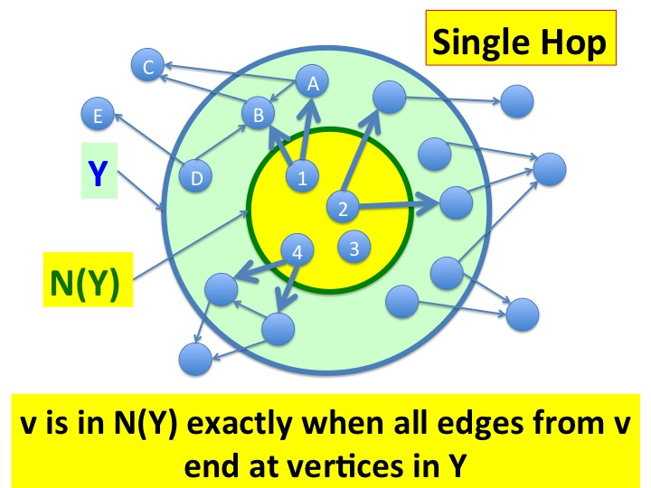
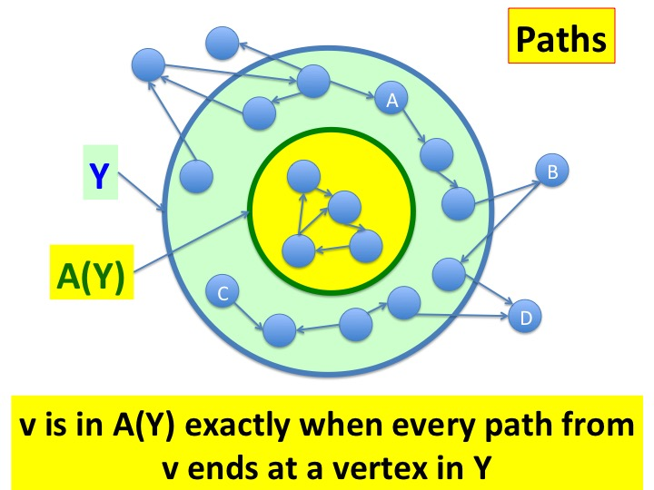
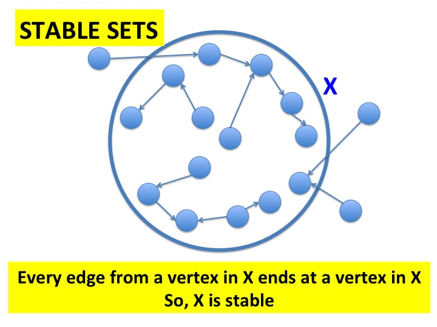
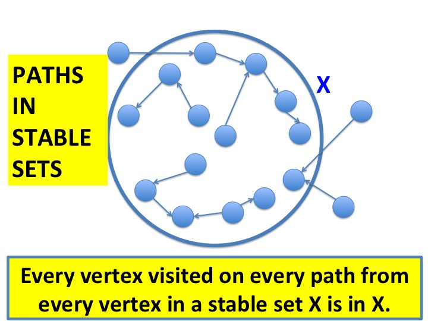

Fig.2 - N(Y).
The set of vertices in \(N(Y)\) is shown in yellow and \(Y\) is
shown in green. A vertex \(v\) is in \(N(Y)\) exactly when all edges
from \(v\) end at vertices in \(Y\).
In the figure
you can see that (1) all the edges from the yellow zone
(i.e. vertices in \(N(Y)\)) end in the blue zone, i.e. vertices in
\(Y\), and (2) there is no vertex \(u\) outside \(N(Y)\) such that
all edges from \(u\) end at \(Y\).
Look at vertex \(A\). It is in \(Y\) and it has an edge to \(B\) which
is also in \(Y\). Why isn't \(A\) in \(N(Y)\)? Because there is an
edge from \(A\) to \(C\) which is outside \(Y\).

Fig.4 - Path Backward: A(Y).
The vertices in \(Y\) are shown in both the blue and yellow circles, and the
vertices in \(A(Y)\) are shown in the yellow circle. Note
that \(A(Y)\) is a subset of \(Y\) because there is an empty path
from each vertex to itself.
A vertex \(v\) is \(A(Y)\) exactly when all paths from \(v\) end in
\(Y\). You can see that (1) all paths from the yellow zone stay inside
the yellow zone and hence stay inside \(Y\), and (2) there is no
vertex \(u\) outisde the yellow zone and inside \(Y\) such that
all paths from \(u\) end inside \(Y\).
The vertices in \(X\) are in the yellow circle and those in \(Y\) are
in the blue annular ring around \(X\). Every edge from the yellow
circle ends in the blue ring. Note that \(Y\) may not be the same as
\(H(X)\) because \(Y\) may have vertices, such as \(A\),
that are not in \(H(X)\).

Fig.7 - Stable(X).
Every edge from every vertex in \(X\) terminates in \(X\). So,
\(stable(X)\) holds.
Note that \(X\) can be stable even though there are edges from outside
\(X\) into \(X\).
Paths in Stable Vertex Sets
\(stable(X)\) holds exactly when all paths from vertices in \(X\) are
to vertices in \(X\).

Paths in X when Stable(X) holds